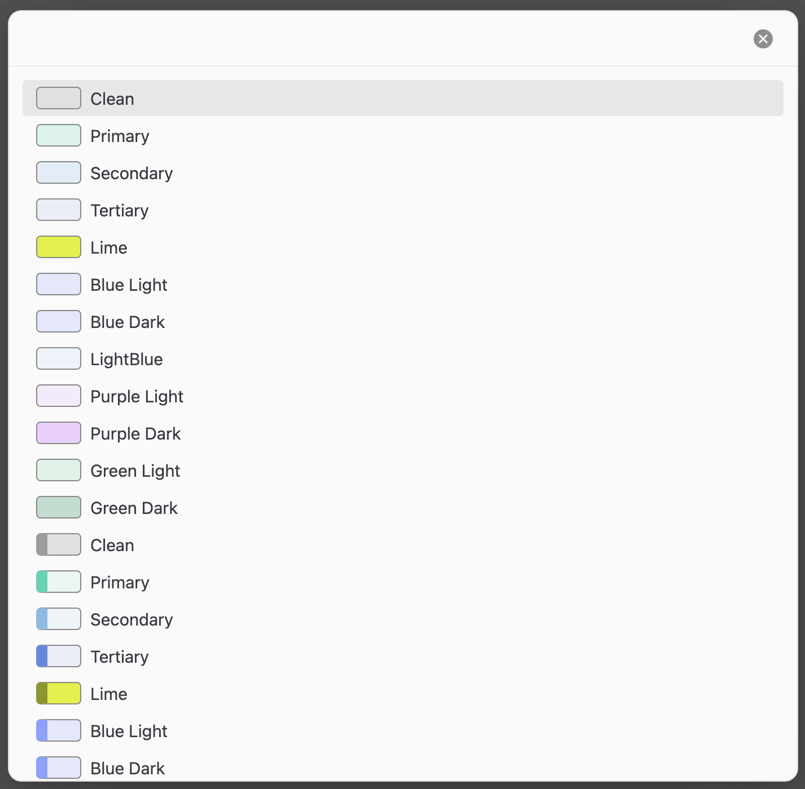

Better Callouts Documentation
30.03.2025
Info
Better Callouts is an Obsidian plugin that lets you create, edit, and manage custom callout styles visually — no CSS knowledge needed. It handles everything for you, including automatic snippet generation.
✨ Features
- 🎨 Visual editor for creating callouts
- 🧠 Custom color, text color, and optional border for the callouts
- 💾 Generates valid Obsidian CSS snippets
- 🔄 Automatically keeps
.obsidian/snippets/betterCallouts.cssup to date - ⚡ Templater integration for easy inserting custom callouts in notes
🚀 How to Use
1. Enable the Plugin
- Copy the plugin folder to
.obsidian/plugins/better-callouts - Enable it in Settings → Community Plugins
- Add a new Callout (this makes the plugin compile everything into the
CSS-File) - Go to
Settings → AppearanceScroll down toCSS-Snippets - Enable
BetterCallouts(This adds all styles created by the plugin to your notes)
If you use Obsidian Publish:
- Add the changes from the
.obsidian/snippets/betterCallouts.cssto yourpublish.cssfile for them to work on the published Obsidian
2. Create a New Callout
- Go to Settings → Better Callouts
- Click the
+button to add a new callout - Go down to the last Callout (your new created)
- Fill out the following fields:
- Label: Name of the callout (e.g. "Important")
- Color: Background color
(any valid CSS code will work in here) - Text: Text color
(any valid CSS code will work in here) - Border: (optional) Enable and set a left border color
- Border Color: (only if Border is set to yes) Add a color for the border
(any valid CSS code will work in here)
- The callout preview will update in real time.
- Your callout will be saved automatically and added to the generated CSS snippet.
3. Where Is everything?
The Plugin uses the following files:
Vault
├── .obsidian
│ ├── plugins
│ │ ├── better-callouts
│ │ │ ├── data.json
│ │ │ ├── main.js
│ │ │ └── manifest.json
│ ├── snippets
│ │ ├── betterCallouts.css
plugins > better-callouts: here is the logic for everything this plugin does
snippets > betterCallouts.css: this is the automatically generated CSS-File
Templater Integration
Once you've done all steps above you can fully enjoy the custom Callouts but you need to add them manually like this:
> [!c-my-callout] Title
> Content
If you want to make this process better you can:
- install the plugin
Templatervia theCommunity PluginsTab. - Set your Templates folder in the
Templater Settings - Create a new file in the Templates folder
- Call my plugins
APIinside a Templater block, that inserts the Callout like this:
<%*
const selected = await app.plugins.plugins["better-callouts"]
.api.getSelectedColorAsync();
if (selected) {
tR += `> [!${selected}]\n> `;
}
%>
What this does:
- Opens a Menu that displays the Callout's colors and their name for you to choose from

- If you've chosen one, Templater will insert a blank callout with the chosen
custom calloutinto your file